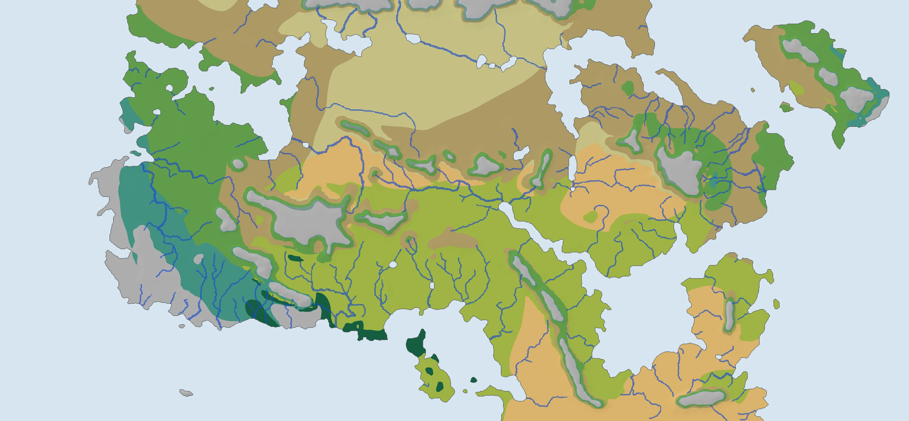
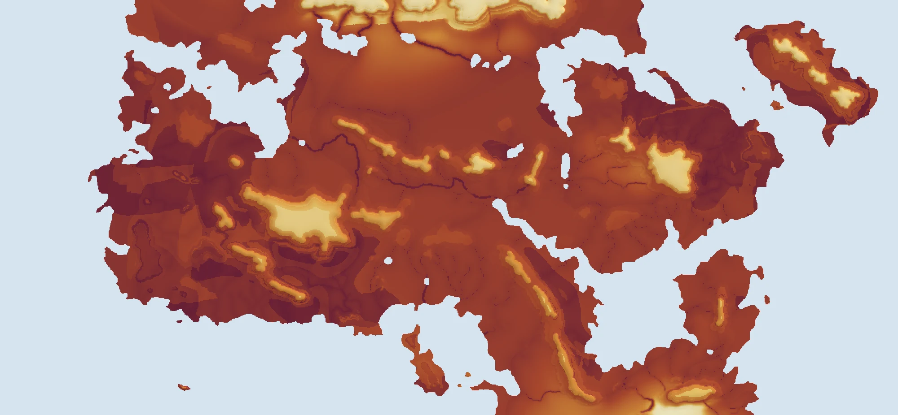
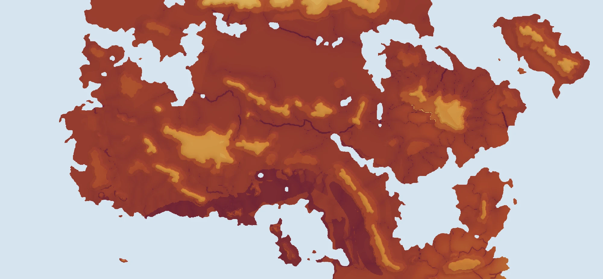
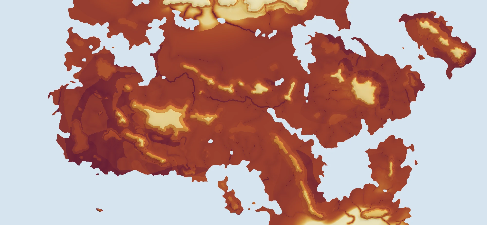

One world, three climate fits
The seasonal map fit, the fit held to Earth physics, and the fit to proposed Whittaker biomes. Each atlas uses the mean climate over the same three layouts of the unknown surroundings.

Free fit
World and physics fitted to the seasonal painted zones.
Numerical checks passed · 11.47% of land outside the diagram
Open the atlas →
Earth fit
World fitted with Earth r37 physics held fixed.
Numerical checks passed · 0.00% of land outside the diagram
Open the atlas →
Whittaker fit
World and physics fitted to the proposed annual-biome targets. A coverage guard limits land outside the original biome diagram.
Numerical checks passed · 1.44% of land outside the diagram
Open the atlas →The same measures
| Atlas | Seasonal zone objective | Whittaker objective | Exact zone agreement | Mean biome agreement | Land outside diagram | Med. dry | Med. Cs |
|---|---|---|---|---|---|---|---|
| Free fit | 0.5084 | 0.4805 | 57.6% | 28.3% | 11.47% | 8.8% | 78.1% |
| Earth fit | 0.1756 | 0.3476 | 25.9% | 15.2% | 0.00% | 20.1% | 25.8% |
| Whittaker fit | 0.4233 | 0.5257 | 55.4% | 37.3% | 1.44% | 9.4% | 86.0% |
Each target zone counts equally in mean biome agreement. Objective scores measure different definitions of a match and are not interchangeable. These figures classify the mean climate fields; calibration logs average scores across individual layouts.
Med. dry and Med. Cs are the shares of the painted Mediterranean zone classified as Köppen dry climates and Mediterranean climates.
The Whittaker atlas adds the proposed biome target map and a match layer. Annual temperature and rainfall do not decide Mediterranean summer drought or swamp hydrology, so those seasonal checks stay separate.
Land and people around 200 AD
Every atlas has ten map topics: Overview, Population, Political reach, Farming, Health and ecology, Temperature, Water, Air and sea, Month by month and Fit checks. Overview holds the biome map, settlement potential, expected density and density around the old heartlands named in the campaign lore. Select any place for its climate chart, farming readouts and the real cities whose climate feels most alike.
Political reach measures how far each polity's hold extends beyond its roads, towns, forts and legions: days of travel over the terrain, month by month (snow, mud, heat and floods on land; ships by each month's winds, shut in the storm season; river boats), control fading by a factor of e per day and averaged over the year, the hardest month and what closes the roads then, and which polity's own network reaches each place first. The travel model was fitted on Han China in AD 2 and tested on the Roman empire of AD 150 and on ancient sailing times.
The Population topic is a lab: supply a total and choose even occupation, water and terrain, or market access. Six maps then show allocated residents, local pressure, spare food support, redistribution, walking to markets and settlement attraction, with province totals. Compare the same 50 million people: Free fit · Earth fit · Whittaker fit.

Free fit
68.5 M people in the central scenario

Earth fit
62.3 M people in the central scenario

Whittaker fit
56.9 M people in the central scenario
| Atlas | Mixed food ceiling | Frontier scenario | Central scenario | Settled-core scenario |
|---|---|---|---|---|
| Free fit | 330.2 M | 29.4 M | 68.5 M | 172.9 M |
| Earth fit | 264.7 M | 26.8 M | 62.3 M | 157.2 M |
| Whittaker fit | 258.4 M | 24.4 M | 56.9 M | 143.4 M |
Low-input Han, Roman and Parthian technology, with poor-year limits on cold and dry margins; environmental malaria potential included. Occupation scenarios are historical analogues, not confidence intervals or reconstructed censuses. Each atlas can remove the malaria penalty. All three density maps share one colour scale.
Population lab and latest milestones · Food, disease and settlement models · Campaign report · Biome methods